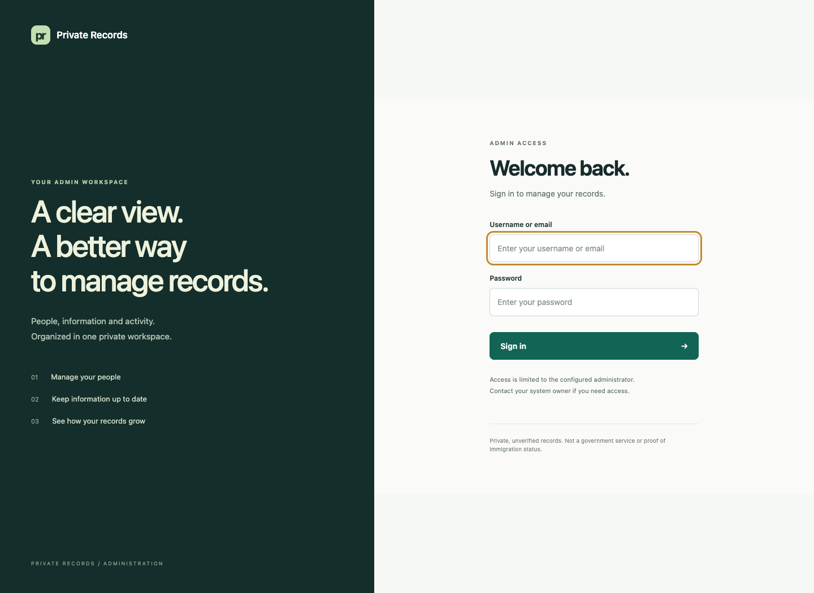
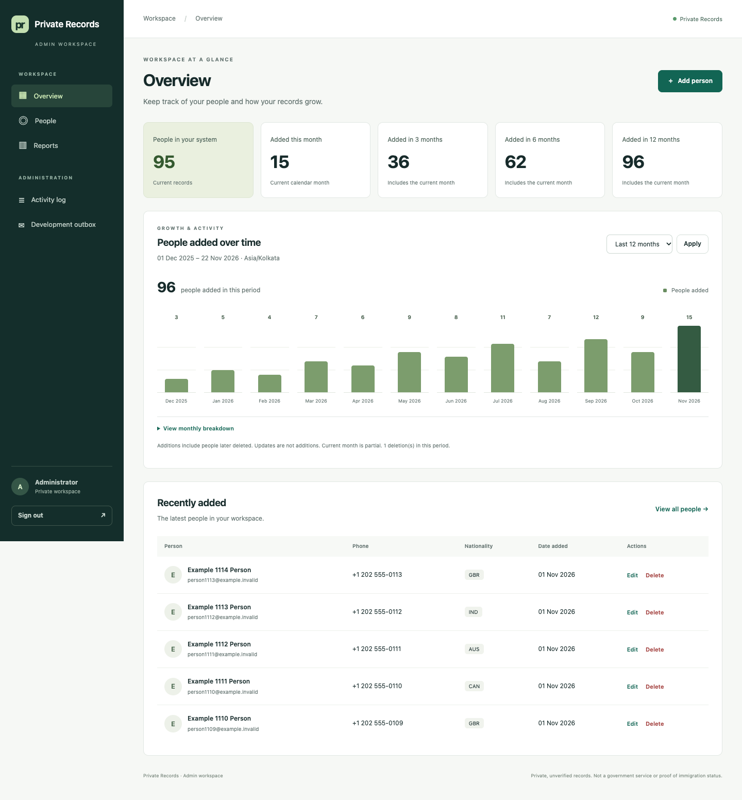
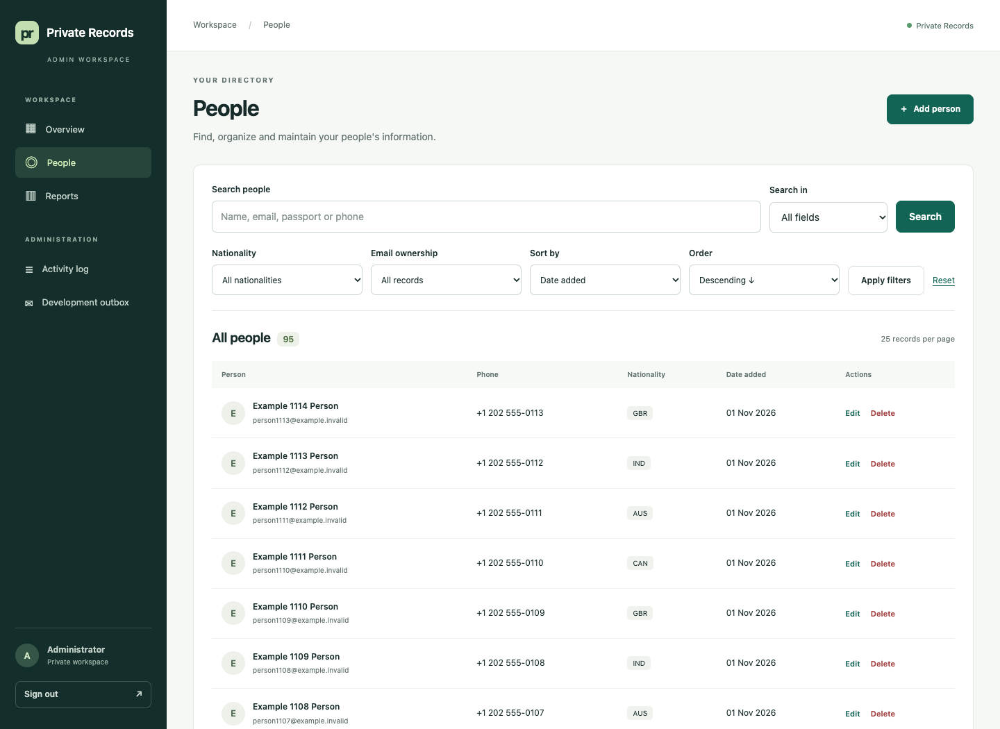
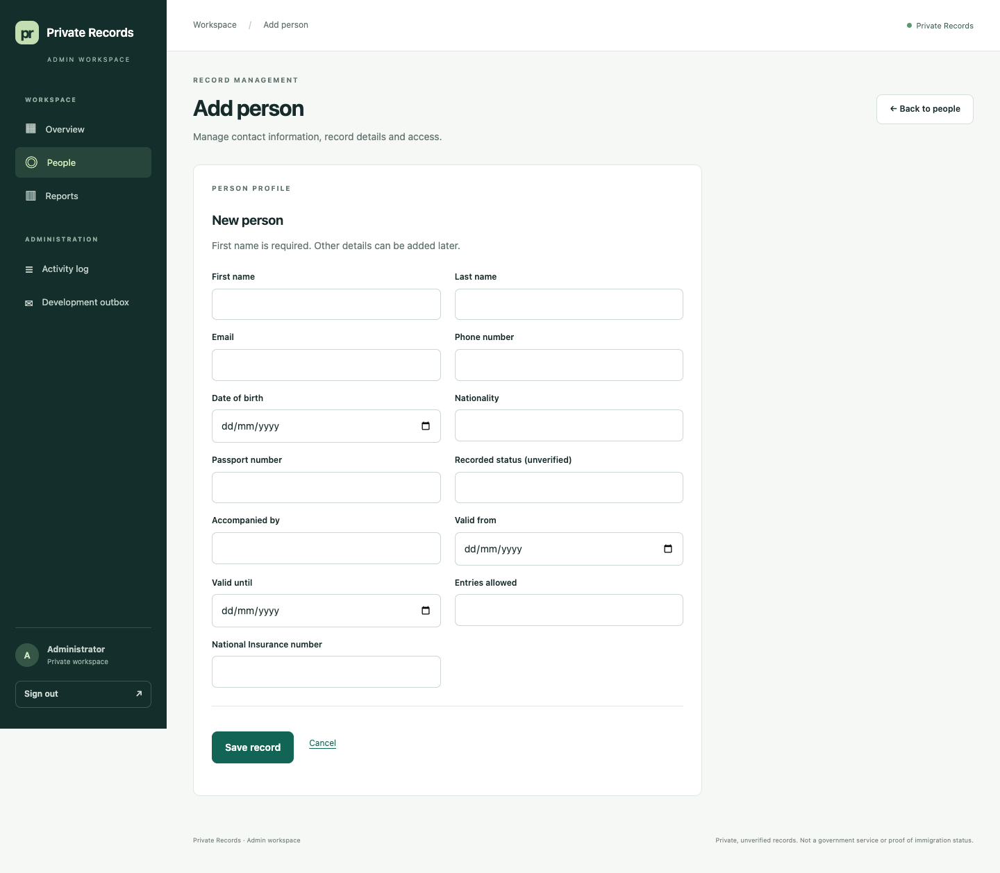
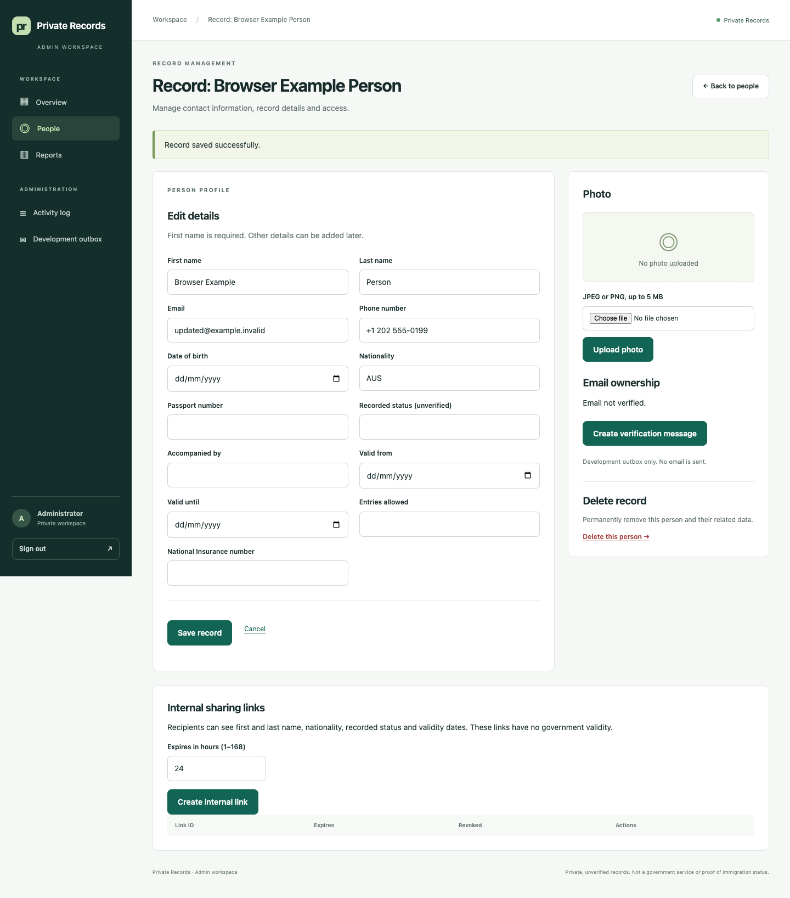
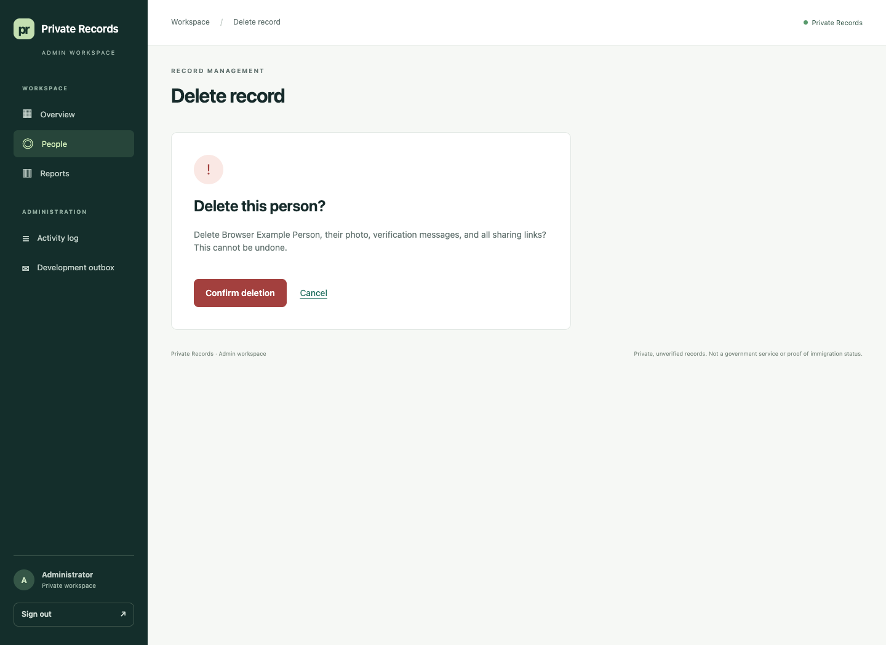
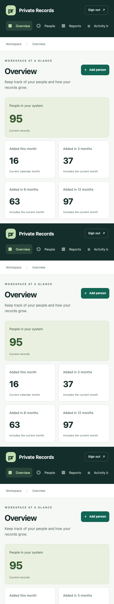
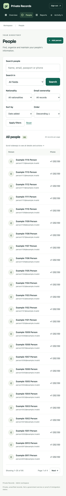
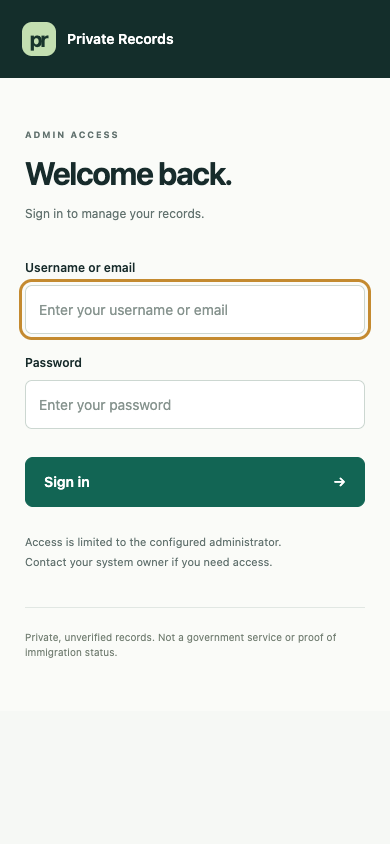

Private Records. Admin workspace.
End-to-end UI previews · Go templates and CSS · Desktop and mobile
All screenshots use fictional records in a separate preview database. These images are static samples. No real people's details are shown.


Dashboard
Current people, 1/3/6/12-month additions, monthly chart and recent records.
View full screenshot →

People directory
Search, nationality and email filters, sorting and pagination.
View full screenshot →



Edit person
Save details, manage a photo, email ownership and internal sharing.
View full screenshot →







Mobile login / logged out
Sign out invalidates the session and returns to login.
View full screenshot →Private, unverified records. Not a government service or proof of immigration status.